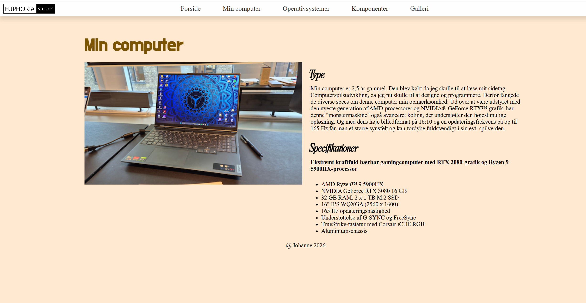

Tema 2
Grundlæggende Web
Tema 2 var vores første "rigtige" tema, da tema 1 var vores introuge. I tema 2 blev vi for første gang stillet til opgave at skulle producere en hjemmeside. Dette hjemmesidesprojekt kom også til at fungere som vores studiestartsprøve. Temaet skulle introducere os for de grundlæggemde principper og mest anvendte værktøjer for en multimediedesigner, og derved elementer og koncepter vi ville komme til at bruge fremover. Her begyndte vi også at være hvordan hjemmesider sættes op i HTML og CSS - det grundlæggende inden for webdesign (i hvert fald kodemæssigt).

Wireframes er en rigtig god måde at "opsætte" ens site, for at hjælpe med at danne et overblik over hvilke elementer der skal være hvor. Der findes 2 versioner af wireframes: low-fidelity (lo-fi) og high-fidelity (hi-fi). Lo-fi wireframes refererer til de tidligere stadier i udvikling, og tæller alt som tidlige udkast, sketches og basis wireframes der blot holder simple figurer og meget lidt tekst (som på billedet).
Hi-fi wireframes derimod er udkast til et website der ligger sig meget tæt op af det endelige resultat. Her kan man ofte de eksempelsbilleder der enten minder om eller vil blive brugt på det endelige site, man kan se typegrafi eksempler, elementer har fået de rigtige farver (hvor en lofi holder sig til et sort, hvid, grp farveskema), og så kan en hi-fi wireframe også indeholde klikbare knapper og animationer.
En lo-fi wireframe fungerer altså derved som et blueprint til siden, hvor en hi-fi fungerer som en meget akurat simulation af det endelige produkt. Det er denne simulation man især kan få meget ud af, at teste på brugere med.

Mobile-first er en kodemetode, hvor man designer og koder ens hjemmeside som et mobilsite først. Dette er en måde at sikre at brugeroplevelsen er i top, da de fleste i dag bruger deres mobiler til at surfe på nettet. En anden god grund til at gøre det på denne måde er, at man kan opnå en bedre placering hos søgemaskiner som Google der nemlig bruger Mobile-First indeksering (dvs. processen hvori data eller information organiseres, registreres og gøres søgbart)
Grids er en opsætningsmetode der kan hjælpe én med at placere elementer på ens website. Dette gøres ved hjælp af rækker og kolonner, som en side kan deles op i. Herunder kan der ses den samme galleri side, men i mobil (venstre) og desktop (højre).


Grids er nemlig i sær også noget kan kan bruge til at opsætte desktop websites så de ser pæne ud. Hvor en mobils skærm er høj og smal er en computers det omvendte. Derfor er der nogle opsætninger af design og kode elementer der tager sig bedre ud på forskellige måder.

Da jeg havde valgt mit fine regnbue tema, tænkte jeg at det også skulle gøre sig gældende i menuen.
Dette brugte jeg en del tid på at få til at virke, men jeg fik en masse ud af det. Jeg lærte blandt andet at det var muligt at gøre. Jeg lærte også at mine ideer ikke passede til min teori eller kunnen endnu, men jeg lærte at de var mulige.
Jeg lærte blandt andet, at når jeg blev lidt bedre til kodning, så ville jeg kunne vælge at farvene forblev efter at en side blev valgt.Men da jeg som sagt var ny til website kodning, så kunne jeg ikke helt, hverken forstå eller følge de kode eksempler jeg fandt, men jeg kunne se at jeg havde lært nok til at kunne se at det snart ville være noget jeg vil kunne finde ud af.